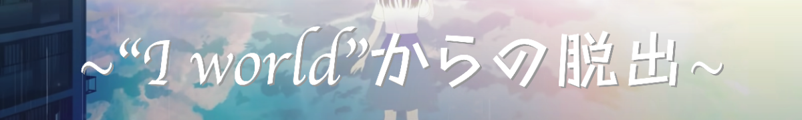

全ステージ クリア！

光が目の前に広がる。
暖かい光が、二人を包み、そして・・・・。
謎を解き、無事Iワールドを脱出することに成功した恋人と君。
君は一刻も早く恋人のところへ行こうと走る。
そして恋人の家と君の家の距離的にちょうど中間にある橋に差し掛かったとき、
向こうから恋人が走ってくるのが見えた。そのまま走っていき二人は抱き合う。
そして恋人は「ありがと。もうダメかと思った。」ポツリと呟いた。
後日、バギーの起こした恋人の誘拐事件は世界的に報道された。そして同時に、
彼が重要なインフラ関係を要求したことも、
管理人の娘だった君の恋人を誘拐したことも、
全ては現実世界でのテロを目論んでいたからだったことがわかった。
そのニュースを横目で見ながら、君は今日も、恋人とIワールドへと出向くのだった。
こうして、父が愛娘のために作ったI'worldは、新たなる愛を育くんだのであった。
~Fin~
遊んでくれてありがとう！
Special Thanks
リアル脱出ゲームとは
2004年に発表されたネットで爆発的に盛り上がった「脱出ゲーム」を、そのフォーマットそのままに現実世界に移し替えた大胆な遊びが「リアル脱出ゲーム」。マンションの1室や廃校、廃病院、そして東京ドームや六本木ヒルズなど、様々な場所で開催され、2007年に初開催して以降、現在までで累計820万人以上を動員。日本のみならず上海、台湾、シンガポールやサンフランシスコなど全世界で参加者を興奮の渦に巻き込み、男女問わずあらゆる世代を取り込む、今大注目の体験型エンターテインメント。
このゲームの企画者
柏キャンパス チーム2
- 企画...おはし
- 物語...綾鷹、おはし
- イラスト&デザイン...てぃーちゃん、おはし
- サイト...よっし〜